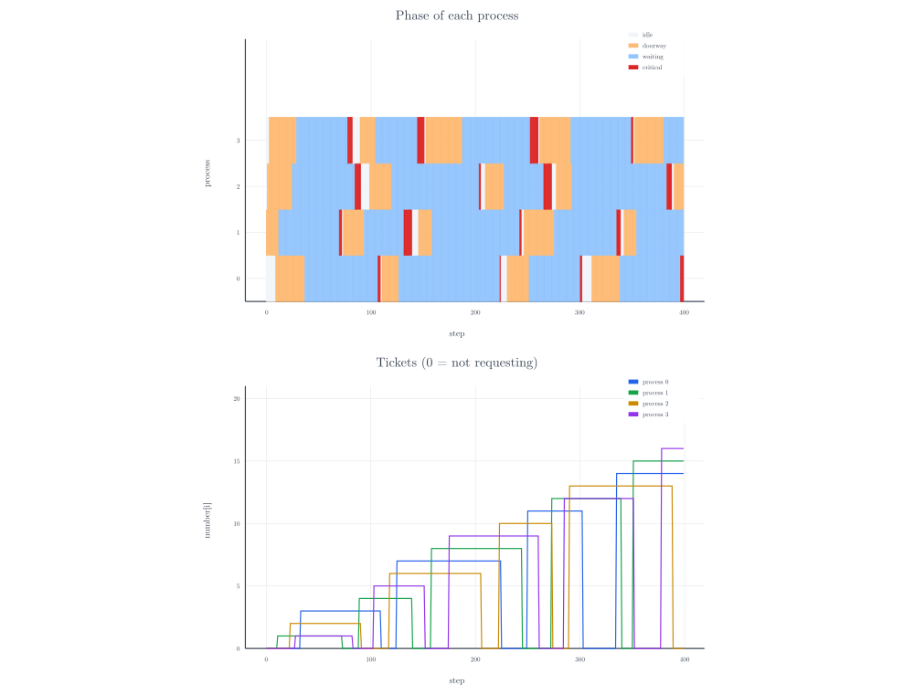

Lamport's Bakery Algorithm: Mutual Exclusion From Reads and Writes
Abstract
Lamport's bakery algorithm (1974) lets \(n\) threads share a critical section using nothing but
reads and writes of shared variables. A thread takes a ticket one larger than every ticket it
sees, then waits until its (ticket, id) pair is the smallest. We prove that this gives mutual
exclusion and first-come-first-served order, and point to the one step of the proof that needs
the choosing flag, which marks a thread that is still picking its ticket. An exhaustive search
of every interleaving of the protocol's atomic steps confirms the result for two and three
processes (38,172 states for three) and finds a 10-step schedule that puts two
processes in the critical section once the flag is removed. Random schedules show the tickets
and the service order, and a real lock built from C++ atomics protects a shared counter
correctly, at a few times the cost of std::mutex.
The protocol
Each thread \(i\) owns two shared variables, written only by \(i\) and read by everyone: \(\text{choosing}[i]\), initially false, and \(\text{number}[i]\), initially 0 (0 means "not interested").
LOCK(i):
choosing[i] ← true # doorway
number[i] ← 1 + max(number[0], …, number[n−1]) # reads one at a time
choosing[i] ← false
for each j ≠ i: # bakery
wait while choosing[j]
wait while number[j] ≠ 0 and (number[j], j) < (number[i], i)
UNLOCK(i):
number[i] ← 0The pairs are compared lexicographically: a smaller ticket goes first, and equal tickets (two
threads can read the same maximum at the same time) are broken by id. The service order this
induces, for tickets already drawn, is what bakery_service_order() computes:
#include <dm/dm.hpp>
namespace alg = dm::algorithms;
int main() {
const std::vector<alg::BakeryTicket> tickets = {{3, 0}, {0, 1}, {2, 2}, {3, 3}, {2, 4}, {1, 5}};
std::print("| thread | ticket |\n| ---: | ---: |\n");
for (const auto& t : tickets) std::print("| {} | {} |\n", t.id, t.number ? std::to_string(t.number) : "– (idle)");
std::print("\nService order:");
for (auto id : alg::bakery_service_order(tickets)) std::print(" {}", id);
std::print(". Keys distinct: {}.\n", alg::bakery_mutual_exclusion_holds(tickets));
}| thread | ticket |
|---|---|
| 0 | 3 |
| 1 | – (idle) |
| 2 | 2 |
| 3 | 3 |
| 4 | 2 |
| 5 | 1 |
Service order: 5 2 4 0 3. Keys distinct: true.
Thread 5 holds the only ticket 1 and goes first. Threads 2 and 4 both hold ticket 2, so the lower id, 2, goes before 4; then threads 0 and 3 with ticket 3 in the same way. Thread 1 is idle and is not served. The pairs are all distinct, which is what makes exactly one thread "first".
Why it works
Say thread \(i\) has finished the doorway once it has set \(\text{choosing}[i]\) back to false with its ticket written. The proof rests on one lemma.
*Lemma.* If thread \(i\) is in the critical section and thread \(k\neq i\) has finished its doorway, then \((\text{number}[i],i)<(\text{number}[k],k)\).
Proof sketch. Consider the moment \(i\) last read \(\text{choosing}[k]=\text{false}\), during its loop. Either \(k\) had not yet entered its doorway then, or \(k\) had already finished it.
- If \(k\) had not yet entered, then \(k\) entered later, after \(i\) had written its own ticket, so \(k\)'s scan of the tickets saw \(\text{number}[i]\) and \(k\) drew a strictly larger ticket.
- If \(k\) had finished its doorway, then \(\text{number}[k]\) was already final when \(i\) next read it. Since \(i\) got past its second wait, either \(\text{number}[k]=0\) (and \(k\) left and must draw again later, larger than \(i\)'s ticket as in the first case) or \((\text{number}[i],i)<(\text{number}[k],k)\). \(\square\)
*Mutual exclusion.* If \(i\) and \(k\) were both in the critical section, both have finished the doorway, and the lemma gives both \((\text{number}[i],i)<(\text{number}[k],k)\) and the reverse, which is impossible because the pairs are distinct.
*First come, first served.* If \(i\) finishes its doorway before \(k\) starts its doorway, \(k\) reads \(i\)'s ticket and draws a larger one, so \(k\) waits for \(i\). Nobody starves: a waiting thread's ticket is fixed, and every thread that arrives later draws a larger one.
The choosing flag is used in exactly one place: the first case split. Without it, \(i\) cannot
tell a thread that has not started its doorway from one that has read the tickets but not yet
written its own. Such a thread may be about to write a ticket equal to \(i\)'s with a smaller id,
and then both believe they go first.
Checking every interleaving
The proof treats each read and write as atomic, as the hardware guarantees for single words with
sequentially consistent ordering. bakery_model_check() explores every interleaving of such
steps by breadth-first search over the states of all processes: program counters, loop indices,
partial maxima, flags and tickets. Tickets grow without bound when processes keep returning, so
draws above a bound are cut off; every interleaving that stays within the bound is explored.
The block checks two and three processes with and without the flag, and prints the shortest
violating schedule found.
#include <dm/dm.hpp>
namespace alg = dm::algorithms;
int main() {
std::print("| processes | choosing flag | ticket bound | states | transitions | draws cut | most in critical section | mutual exclusion | s |\n"
"| ---: | --- | ---: | ---: | ---: | ---: | ---: | --- | ---: |\n");
alg::BakeryCheck shown;
for (auto [n, flag, bound] : {std::tuple{2, true, 8}, {2, false, 8}, {3, true, 5}, {3, false, 5}}) {
const auto t0 = std::chrono::steady_clock::now();
auto r = alg::bakery_model_check({static_cast<std::size_t>(n), flag, static_cast<std::uint32_t>(bound)});
const double s = std::chrono::duration<double>(std::chrono::steady_clock::now() - t0).count();
std::print("| {} | {} | {} | {} | {} | {} | {} | {} | {:.1f} |\n", n, flag ? "yes" : "no", bound, r.states, r.transitions,
r.cut_by_bound, r.max_critical, r.mutual_exclusion ? "holds" : "**violated**", s);
if (n == 2 && !flag) shown = std::move(r);
}
std::print("\nShortest violating schedule with 2 processes and no choosing flag:\n\n| step | process | action |\n| ---: | ---: | --- |\n");
for (std::size_t k = 0; k < shown.counterexample.size(); ++k)
std::print("| {} | {} | {} |\n", k + 1, shown.counterexample[k].process, shown.counterexample[k].action);
}| processes | choosing flag | ticket bound | states | transitions | draws cut | most in critical section | mutual exclusion | s |
|---|---|---|---|---|---|---|---|---|
| 2 | yes | 8 | 906 | 1584 | 20 | 1 | holds | 0.0 |
| 2 | no | 8 | 568 | 1082 | 18 | 2 | *violated* | 0.0 |
| 3 | yes | 5 | 38172 | 97861 | 1615 | 1 | holds | 0.1 |
| 3 | no | 5 | 36403 | 102714 | 2574 | 3 | *violated* | 0.1 |
Shortest violating schedule with 2 processes and no choosing flag:
| step | process | action |
|---|---|---|
| 1 | 0 | start doorway |
| 2 | 0 | read number[0] = 0 |
| 3 | 0 | read number[1] = 0 |
| 4 | 1 | start doorway |
| 5 | 1 | read number[0] = 0 |
| 6 | 1 | read number[1] = 0 |
| 7 | 1 | number[1] = 1 |
| 8 | 1 | read number[0] = 0, pass, enter critical section |
| 9 | 0 | number[0] = 1 |
| 10 | 0 | read number[1] = 1, pass, enter critical section |
With the flag, every reachable state has at most one process in the critical section: 906 states for two processes and 38,172 for three, explored in well under a second. Without it, the search finds a violation for two processes and, for three, states with all three inside at once.
The shortest violating schedule is exactly the gap in the proof. Process 0 reads both tickets (both 0) but has not yet written its own. Process 1 then runs its whole doorway, takes ticket 1, sees \(\text{number}[0]=0\) and enters. Process 0 now writes ticket 1, equal to process 1's, and since its id is smaller, \((1,0)<(1,1)\) and it enters too. With the flag, process 1 would have seen \(\text{choosing}[0]=\text{true}\) at step 8 and waited until process 0's ticket was written, then deferred to it.
The ticket bound cuts off only draws above it: 20 of 1,584 transitions for two processes. The check is therefore complete for schedules whose tickets stay small, which is where the interesting races are, since the violations above need only tickets of 1.
Watching a schedule
bakery_simulate() runs the same atomic steps under a random scheduler that picks a process
uniformly at each step. The block runs four processes for 100,000 steps and draws the first
400.
#include <dm/dm.hpp>
namespace alg = dm::algorithms;
int main() {
std::filesystem::create_directories("build");
const std::size_t n = 4, steps = 100000, shown = 400;
const auto sim = alg::bakery_simulate({n, true, 0}, steps, 2026);
std::uint32_t max_ticket = 0;
for (const auto& row : sim.number)
for (auto v : row) max_ticket = std::max(max_ticket, v);
std::print("| process | critical-section entries |\n| ---: | ---: |\n");
for (std::size_t i = 0; i < n; ++i) std::print("| {} | {} |\n", i, sim.entries[i]);
std::print("\nSteps with two processes in the critical section: {}. Largest ticket: {}.\n", sim.violations, max_ticket);
// Longest run of consecutive entries by the same process.
std::size_t run = 1, longest = 1;
for (std::size_t k = 1; k < sim.order.size(); ++k) {
run = sim.order[k] == sim.order[k - 1] ? run + 1 : 1;
longest = std::max(longest, run);
}
std::print("Longest run of consecutive entries by one process: {}.\n", longest);
std::vector<double> xs, ys;
for (std::size_t t = 0; t < shown; ++t) xs.push_back(static_cast<double>(t));
for (std::size_t i = 0; i < n; ++i) ys.push_back(static_cast<double>(i));
std::vector<std::vector<double>> z(shown, std::vector<double>(n));
for (std::size_t t = 0; t < shown; ++t)
for (std::size_t i = 0; i < n; ++i) z[t][i] = static_cast<double>(sim.phase[t][i]);
auto phases = dm::graphics::RPlot::create()
.image(xs, ys, z, {dm::RGB{241, 245, 249}, dm::RGB{253, 186, 116}, dm::RGB{147, 197, 253}, dm::RGB{220, 38, 38}}, 0, 3)
.legend({"idle", "doorway", "waiting", "critical"},
{dm::RGB{241, 245, 249}, dm::RGB{253, 186, 116}, dm::RGB{147, 197, 253}, dm::RGB{220, 38, 38}})
.y_ticks({0, 1, 2, 3}, {"0", "1", "2", "3"})
.y_limits(-0.5, 5.2)
.title("Phase of each process")
.x_label("step")
.y_label("process");
auto tickets = dm::graphics::RPlot::create();
const dm::RGB colours[] = {{37, 99, 235}, {22, 163, 74}, {202, 138, 4}, {147, 51, 234}};
for (std::size_t i = 0; i < n; ++i) {
std::vector<double> v;
for (std::size_t t = 0; t < shown; ++t) v.push_back(sim.number[t][i]);
tickets.lines(xs, v, "", colours[i], 2.0);
}
tickets.legend({"process 0", "process 1", "process 2", "process 3"}, {colours[0], colours[1], colours[2], colours[3]})
.y_limits(0, 21)
.title("Tickets (0 = not requesting)")
.x_label("step")
.y_label("number[i]");
dm::graphics::RLayout::create(2, 1).add(phases).add(tickets).size(1000, 760).save_svg("build/bakery_schedule.svg");
}| process | critical-section entries |
|---|---|
| 0 | 1060 |
| 1 | 1027 |
| 2 | 997 |
| 3 | 993 |
Steps with two processes in the critical section: 0. Largest ticket: 1343. Longest run of consecutive entries by one process: 2.

In 100,000 random steps no two processes were ever in the critical section together, and the four processes entered it 993 to 1,060 times each: service is fair. No process entered more than twice in a row, because each departing process must draw a new ticket larger than those already waiting. In the figure the red critical stretches are thin and never overlap, and most of each process's time is spent waiting, since with four processes competing, three are usually queued.
The bottom panel shows the algorithm's best-known weakness: the tickets keep climbing, reaching 1,343 by the end. A ticket only drops back when the bakery empties completely, which under constant contention never happens, so the variables must be wide enough for unbounded growth. Bounded variants exist, at the cost of more complicated protocols.
A real lock
BakeryLock implements the protocol with std::atomic loads and stores, which are sequentially
consistent by default; with weaker memory orderings the processor could reorder a thread's ticket
write after its reads of other tickets, and the proof would no longer apply. The block has each of
\(T\) threads increment a plain shared long 200,000 times inside the lock, and compares with
std::mutex and with no lock at all.
#include <dm/dm.hpp>
namespace alg = dm::algorithms;
template <typename Lock, typename Unlock>
std::pair<long, double> run(std::size_t threads, std::size_t per, Lock lock, Unlock unlock) {
long counter = 0;
const auto t0 = std::chrono::steady_clock::now();
std::vector<std::thread> pool;
for (std::size_t t = 0; t < threads; ++t)
pool.emplace_back([&, t] {
for (std::size_t k = 0; k < per; ++k) {
lock(t);
volatile long v = counter;
counter = v + 1;
unlock(t);
}
});
for (auto& th : pool) th.join();
const double ns = std::chrono::duration<double, std::nano>(std::chrono::steady_clock::now() - t0).count() / (threads * per);
return {counter, ns};
}
int main() {
const std::size_t per = 200000;
std::print("Hardware threads: {}.\n\n", std::thread::hardware_concurrency());
std::print("| threads | expected count | bakery count | bakery ns per increment | largest ticket | std::mutex count | mutex ns | no lock count |\n"
"| ---: | ---: | ---: | ---: | ---: | ---: | ---: | ---: |\n");
for (std::size_t T : {1u, 2u, 4u}) {
alg::BakeryLock bakery(T);
std::mutex m;
const auto b = run(T, per, [&](std::size_t i) { bakery.lock(i); }, [&](std::size_t i) { bakery.unlock(i); });
const auto x = run(T, per, [&](std::size_t) { m.lock(); }, [&](std::size_t) { m.unlock(); });
const auto u = run(T, per, [](std::size_t) {}, [](std::size_t) {});
std::print("| {} | {} | {} | {:.0f} | {} | {} | {:.0f} | {} |\n", T, T * per, b.first, b.second, bakery.max_ticket(), x.first,
x.second, u.first);
}
}Hardware threads: 32.
| threads | expected count | bakery count | bakery ns per increment | largest ticket | std::mutex count | mutex ns | no lock count |
|---|---|---|---|---|---|---|---|
| 1 | 200000 | 200000 | 81 | 1 | 200000 | 31 | 200000 |
| 2 | 400000 | 400000 | 193 | 30 | 400000 | 40 | 400000 |
| 4 | 800000 | 800000 | 1008 | 102125 | 800000 | 50 | 800000 |
With the bakery lock every increment survived: the counter equals \(T\times200{,}000\) for one,
two and four threads, while without a lock four threads lost between half and three quarters of their increments. The cost is
higher than std::mutex: on this machine a locked increment takes roughly 20 ns against 10 for
one thread and roughly 200 ns against 50 for four, and the ratio varies between about 2 and 8
from run to run as the threads contend. Each acquisition reads every other thread's ticket and
flag, so the work grows with \(T\), and the cache lines holding those variables bounce between
cores; a mutex built on an atomic read-modify-write needs one contended line. The largest ticket
with four threads runs to tens or hundreds of thousands after 800,000 acquisitions, again showing the unbounded growth.
The bakery algorithm's value is that it needs no such instruction: it shows that reads and
writes alone are enough for fair mutual exclusion.
Summary
- A thread takes a ticket one larger than all it sees and waits for the smallest (ticket, id) pair; the lemma that the critical thread's pair is smaller than every other finished doorway gives mutual exclusion and first-come-first-served order.
- An exhaustive search of interleavings confirms mutual exclusion for two and three processes
(906 and 38,172 states). Without the
choosingflag it finds a 10-step schedule in which a thread that has read the tickets but not written its own enters alongside another. - Random schedules serve four processes evenly with no violations, but tickets grow without bound under contention.
- A
std::atomicimplementation is correct and costs a few times as much asstd::mutexon one to four threads, growing with the number of threads.